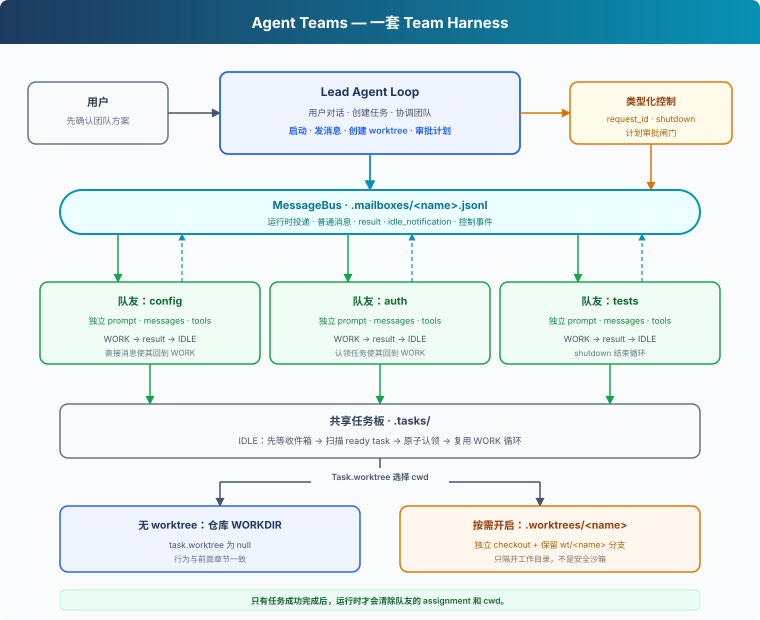
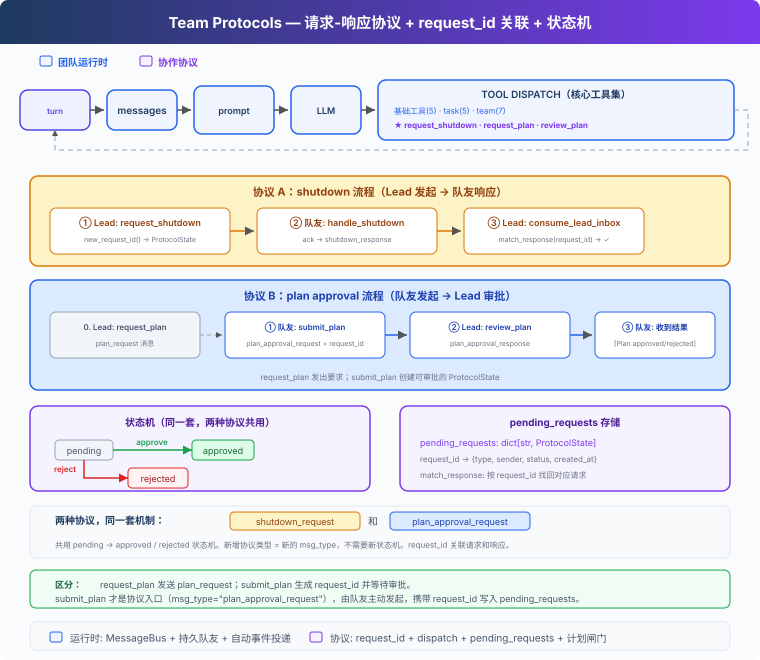

s13: Agent Teams — 团队运行时与协作协议
s01 → ... → s10 → s13 → s14 → s15 → s16 → s17
“一个 Agent 装不下整项工作时，就让队友分头完成。” — 持久队友、共享任务认领、可选 worktree 与协作协议。
Harness 层：Team（团队）— 多个 Agent 如何分工、共享状态，同时接受 Lead 控制。
问题
假设我们让 Agent 重构整个后端，工作涉及配置加载、认证和测试。一个 Agent 可以依次处理，但总耗时更长，早期细节也会逐渐离开上下文。
这类工作适合并行，可用户通常只描述目标，不会替运行时设计团队：
重构这个示例后端。清理配置加载、认证和测试，
保持现有接口，并确保测试通过。
Harness 需要回答一组相互关联的问题：
- 谁判断并行是否有用，新增 Agent 又由谁确认？
- 每个队友如何跨任务保留身份和上下文？
- 结果如何自动返回 Lead，而不是让模型轮询收件箱？
- 空闲队友能否直接接手 ready task，不再等待 Lead 逐项派发？
- 并行修改可能冲突时，任务应该使用哪个工作目录？
- 关机和计划审批如何成为可追踪、可执行的协议？
解决方案

s13 复用 s10 的基础工具、Hooks、Permission 和 Task System，并增加一套由 Lead 管理的团队运行时：
- Lead 负责用户对话，提出分工方案并等待确认。
- 队友 运行独立 Agent Loop，在 WORK 和 IDLE 之间切换。
- MessageBus 通过文件收件箱传递普通消息、结果和控制事件。
- 运行时投递 消费 Lead 的收件箱，把团队事件注入下一轮对话。
- 共享任务板 让空闲队友发现 ready task，并在锁内完成认领。
- 可选 worktree 在需要时把任务绑定到另一个工作目录；未绑定任务仍使用仓库目录。
- 类型化协议和计划闸门 显式记录关机与审批状态，并在计划获批前阻止修改型工具。
任务图继续采用 s10 的两阶段契约。Lead 先为所有节点调用 create_task，再使用返回的运行时 ID 调用 update_task(addBlockedBy=...)，最后才分配 ready task。只有 Lead 能使用 update_task；队友只能列举、认领和完成任务，团队运行期间不能改写任务图结构。
s11 的后台任务和 s12 的定时任务没有被带入本章。它们不参与队友通信、任务认领或计划审批。
这些机制都属于 Team 这一层。任务发现不需要另一套 Agent Loop，worktree 也不会产生另一种 Agent。
工作原理
1. Lead 先提出团队，再等待用户确认
启动队友会改变成本、并发度和可以修改工作区的角色集合。Lead 的系统提示词会把这条边界明确写出来：
"When parallel work would help, first propose a small team with clear "
"responsibilities and wait for the user's confirmation. Do not call "
"spawn_teammate before the user confirms."
收到第一条需求后，Lead 只提出分工：
我建议并行处理三个方向：
- config：清理配置加载
- auth：重构认证
- tests：补充回归测试
你确认后我再启动队友。
用户回复“开始吧”后，Lead 才能调用 spawn_teammate。Lead 会先创建任务，再把初始 task_id 传给队友。用户给出目标，Lead 设计团队，用户确认执行边界。
2. 每个队友拥有独立循环
s06 的 subagent 是一次性调用，队友则是持久执行单元：
| s06 Subagent | s13 队友 | |
|---|---|---|
| 生命周期 | 一次调用后结束 | WORK → IDLE → WORK，直到关机 |
| 上下文 | 只服务一个任务 | 跨任务保留 |
| 通信 | 返回一次结果 | 接收消息并发出事件 |
| 协作 | 单向委派 | 与 Lead 双向协作 |
TeammateRuntime 为每个队友保存独立的系统提示词、messages、工具和当前任务，再在线程中运行 WORK / IDLE 循环。队友工作时，Lead 可以继续协调其他任务。lead 和 agent 保留给运行时身份，但 MessageBus 仍允许把 lead 作为协调者收件箱。
spawn_teammate 在线程启动前认领初始任务。认领失败时不会启动队友。队友没有任务时，文件和 Shell 工具会要求它先认领任务，而不是回退到仓库目录。
3. MessageBus 把通信放在模型上下文之外
Lead 和队友不能共享同一个 messages 数组，否则一个队友的工具结果会进入另一个队友的推理上下文。MessageBus 为每个 Agent 提供 .mailboxes/<name>.jsonl 收件箱：
class MessageBus:
def send(self, from_agent, to_agent, content,
msg_type="message", metadata=None):
msg = {
"from": from_agent,
"to": to_agent,
"content": content,
"type": msg_type,
"metadata": metadata or {},
}
with self._changed:
MAILBOX_DIR.mkdir(parents=True, exist_ok=True)
with self._path(to_agent).open("a", encoding="utf-8") as handle:
handle.write(json.dumps(msg, ensure_ascii=True) + "\n")
self._changed.notify_all()
def wait_for_messages(self, agent, timeout=None):
deadline = None if timeout is None else time.monotonic() + timeout
with self._changed:
while not self.peek(agent):
remaining = (None if deadline is None
else deadline - time.monotonic())
if remaining is not None and remaining <= 0:
return []
self._changed.wait(remaining)
return self._read_unlocked(agent)
锁会保护收件箱文件，避免队友并发读写。Condition 既能在消息到达时唤醒队友，也能支持 IDLE 状态下的短时等待。
4. 收件箱事件由运行时投递
read_inbox() 会读取并删除收件箱文件，因此 Lead 只保留一个消费者 consume_lead_inbox()：
def consume_lead_inbox():
messages = BUS.read_inbox("lead")
for message in messages:
if message["type"].endswith("_response"):
match_response(...)
return messages
CLI 主循环同时等待终端输入和 Lead 收件箱。新消息到达时，它会先消费收件箱，再发起一轮 Lead 调用：
MessageBus → consume_lead_inbox
→ 更新协议状态
→ 把 [Team events] 注入 history
→ 启动新一轮 Lead 调用
Lead 启动队友后会结束当前轮次，不用反复调用 list_teammates 或 get_task 等待结果。队友事件到达时，运行时会自动唤醒下一轮。
check_inbox 不是模型工具。消息到达和消费属于运行时，模型只处理已经投递到上下文里的事件。
5. 结果与 IDLE 是两个事件
队友完成一项任务后，运行时按顺序发送两个事件：
result: "认证已重构，相关测试通过。"
idle_notification: "Waiting for more work."
result 回答“这项任务产出了什么”，idle_notification 回答“这个队友能否继续接任务”。一个含糊的“完成了”无法同时表达这两种状态。
空闲队友不会退出。直接消息或 ready task 会让它回到 WORK，shutdown_request 则会启动平滑关机握手。
6. IDLE 先看收件箱，再找 ready task
队友进入 IDLE 后优先处理消息，然后检查共享任务板：
while True:
inbox = BUS.wait_for_messages(name, IDLE_SCAN_INTERVAL)
if inbox:
should_stop = handle_messages(inbox)
if should_stop or messages[-1]["role"] == "user":
break
continue
task = claim_next_task(name)
if task:
messages.append({
"role": "user",
"content": f"[Auto-claimed task {task.id}] {task.subject}",
})
break
关机、计划审批和 Lead 的直接指令应该先于临时发现的工作。如果没有消息，也没有 ready task，队友会保持 IDLE。前置任务完成后，当前受阻的任务可能变为 ready。
7. 发现和认领分成两步，认领必须原子执行
扫描只负责找候选任务：
def scan_unclaimed_tasks() -> list[Task]:
return [
task for task in list_tasks()
if task.status == "pending"
and task.owner is None
and can_start(task.id)
]
候选列表只是某一时刻的快照。其他队友，甚至另一个使用同一任务目录的 Harness 进程，也可能看到同一任务。因此所有权变更必须放进 claim_task()，并由 task_store_lock() 同时取得进程内锁和文件锁：
def claim_task(task_id: str, owner: str) -> str:
with task_store_lock():
task = load_task(task_id)
if task.status != "pending" or task.owner is not None:
return "Task is no longer available"
if _owner_in_progress(owner):
return "Owner must complete its current task first"
if not can_start(task_id):
return "Task is blocked"
cwd, error = task_worktree_cwd(task)
if error:
return f"Cannot claim {task_id}: {error}"
task.owner = owner
task.status = "in_progress"
save_task(task)
teammate_assignments[owner] = {"task_id": task.id, "cwd": cwd}
return f"Claimed {task.id}"
多个队友可以同时发现同一候选，但只有一个 claim 能把它推进到 in_progress。持有同一存储锁时，任务内容会先写入临时文件，再原子替换正式文件。队友完成当前任务后才能再认领下一项；worktree 绑定损坏时，认领会直接失败，不会回退到仓库目录。
8. 认领后的工作复用同一个 WORK 循环
认领成功后，运行时把任务 ID、标题和描述放进队友的 messages：
任务板出现 ready task
→ IDLE 队友发现候选
→ claim_task 写入 owner 和 in_progress
→ 任务进入队友 messages
→ WORK
→ complete_task
→ result + idle_notification
→ IDLE
队友继续使用直接派发任务时的模型调用、文件工具、Shell、计划闸门、结果上报和关机协议。任务发现只是现有 WORK 循环的另一个入口。
9. 由任务选择工具的工作目录
Task.worktree 是可选字段：
@dataclass
class Task:
id: str
subject: str
description: str
status: str
owner: str | None
blockedBy: list[str]
worktree: str | None = None
并行修改需要分开目录时，Lead 可以创建并绑定 worktree：
create_worktree(name="auth-refactor", task_id="task_1a2b3c4d")
create_worktree 只提供给 Lead。它要求任务处于 pending、无人认领且尚未绑定，随后检查名称、路径、分支和 Git 注册信息，创建 checkout，最后才写入任务绑定。如果 Git 报告失败却已经留下分支或已注册的 checkout，运行时会报告 partial operation，让任务保持未绑定，并保留这些内容供人工恢复。队友只使用任务工具和文件工具。
认领任务时，运行时会把解析后的目录写入 teammate_assignments。该队友的 bash、read_file、write_file、edit_file 和 glob 都从 assignment 读取目录。没有绑定 worktree 的任务解析到 WORKDIR；没有认领任务的队友不能使用这些工作区工具：
cwd, error = task_worktree_cwd(task)
if not error:
teammate_assignments[owner] = {
"task_id": task.id,
"cwd": cwd,
}
complete_task(task_id, owner) 会检查调用者是否拥有这个进行中的任务。成功完成只记录结果，不会马上清除 assignment；直到当前模型轮次结束，后续工具调用仍使用这个任务目录。队友回到 IDLE 时，运行时才释放 assignment。完成失败时也会保留目录，方便修正后重试。
进程重启后，assignment_cwd() 可以根据持久化任务中的 owner 和 worktree 绑定恢复进行中的 assignment。同一 owner 已转到新任务时，它也会替换本地的旧 lease。若绑定丢失或无效，它会直接失败，不会把操作悄悄切回仓库目录。
Worktree 只分开 Git 工作目录和分支，不是安全沙箱。Shell 命令仍能访问父进程有权访问的路径和资源。
10. Worktree 移除由宿主负责
模型可以创建任务绑定的 worktree，但不能移除它。清理保留为宿主函数，让用户或宿主先检查任务所有权、assignment lease 和 Git 状态。这个函数会拒绝 pending 或 in-progress 绑定以及当前轮次仍在使用的 lease。未明确选择破坏性移除时，已跟踪、未跟踪和已忽略文件都会阻止清理。
remove_worktree(name, discard_changes=True) 只供已经另行取得用户明确确认的宿主调用。两种移除路径都会保留仓库里的 wt/<name> 分支，包括没有 upstream 的干净本地提交。移除成功后，任务绑定会被清空。
干净 worktree → 宿主可移除目录，保留 wt/<name> 分支
有改动 worktree → 由用户决定保留还是丢弃
待办/进行中任务 → 拒绝移除
任务完成与 worktree 清理也互相独立。complete_task 记录任务结果；队友回到 IDLE 后，用户或宿主才检查、合并、保留或移除 worktree。
11. 控制消息使用类型和 request_id
普通协作可以使用自由文本，关机和审批则不能依靠猜测消息意图。它们使用结构化消息：

@dataclass
class ProtocolState:
request_id: str
type: str
sender: str
target: str
status: str
payload: str
work_version: int | None = None
task_id: str | None = None
pending_requests: dict[str, ProtocolState] = {}
关机路径如下：
Lead 创建 pending 状态的关机请求
→ shutdown_request(request_id) 进入队友收件箱
→ 队友完成当前步骤
→ shutdown_response(request_id) 返回 Lead
→ request_id 找到原始请求
→ pending 变为 approved，队友循环退出
ID 把回复关联到请求，类型阻止不匹配的回复修改状态，状态则阻止同一回复重复生效。
12. 计划审批会约束执行
计划协议的方向相反：
Lead → plan_request
队友 → plan_approval_request(request_id, plan)
Lead → plan_approval_response(request_id, approve, feedback)
如果 Lead 在启动队友前就知道必须先看计划，可以调用 spawn_teammate(..., task_id=task.id, require_plan=True)；运行时会先认领任务并打开闸门，再启动线程。对于已经运行的队友，也可以再用 request_plan 要求其提交计划。
工具分发层负责执行闸门：
def _run_teammate_tool(name, block, handlers):
gate = plan_gates.get(name, "not_required")
if block.name in {"bash", "write_file", "edit_file"} and gate not in {
"not_required", "approved"
}:
return f"Blocked: plan status is {gate}."
try:
return handlers[block.name](**block.input)
except Exception as error:
return f"Error: {type(error).__name__}: {error}"
状态是 required、pending 或 rejected 时，队友可以读取文件、提交或修改计划，但不能运行 Shell 命令、写文件或编辑文件。提交计划时会记录队友当前的 task 和 work version；审批返回时两者仍然一致才会生效。认领或释放任务会改变 work version，使旧审批失效；普通消息不会改变任务身份或审批状态。
队友不会直接从后台线程读取用户输入。遇到需要用户确认的危险命令或工作区外路径时，工具会返回 permission 错误，由 Lead 与用户处理。
一次完整运行
s13 >> 把后端重构拆到共享任务板，尽量并行完成配置、认证和测试。
认证任务使用 worktree，保持现有接口，并确保测试通过。
Lead：我建议按 config、auth 和 tests 三个方向分工。
是否启动团队？
s13 >> 开始吧
[task] config created
[task] auth created → worktree auth-refactor
[task] tests created
[claim] alice → config (cwd: repository)
[claim] bob → auth (cwd: .worktrees/auth-refactor)
[teammate] alice spawned
[teammate] bob spawned
[complete] auth
[bus] bob → lead (result) ...
[bus] bob → lead (idle_notification) ...
[wake: 2 team events → new turn]
Lead：我已收到认证任务的结果，接下来继续协调其余工作。
终端会显示用户请求、Lead 的团队方案、任务状态、认领结果、所选目录、结果、IDLE 切换和控制事件。用户不需要指定谁是 Lead，也不必提醒它检查收件箱。
相对 s10 的变化
| 组件 | s10 | s13 |
|---|---|---|
| Agent | 单个 Agent | 一个 Lead 加持久队友 |
| 用户流程 | 直接执行请求 | 先提团队方案，再确认启动 |
| 通信 | 无 | 文件收件箱加运行时投递 |
| 生命周期 | 一个循环 | 队友 WORK / IDLE / shutdown |
| 共享工作 | 单 Agent 使用任务工具 | IDLE 扫描加队友原子认领 |
| 工作目录 | 仓库 WORKDIR |
必须认领任务；任务可选 worktree |
| 结果上报 | 当前 Agent 输出 | 分开的 result 与 idle_notification |
| 控制 | 无 | 类型化关机与计划审批协议 |
| 执行约束 | 无团队约束 | 必需计划会锁住修改型工具 |
试一下
cd learn-claude-code
python s13_agent_teams/code.py
输入一个自然需求：
把后端重构拆到共享任务板，在依赖允许时并行完成配置、认证和测试。
认证任务使用 worktree，保持现有接口，并在最后汇总结果。
Lead 提出团队方案后回复：
开始吧
观察 .tasks/ 如何从 pending 进入 in_progress 和 completed，.mailboxes/ 如何投递 result 与 idle_notification，以及 .worktrees/ 是否只为绑定的任务创建。还可以检查直接消息是否先于任务板扫描，以及 complete_task 失败后队友的工作目录是否保持不变。
接下来
Lead 和队友目前只能调用直接写在 code.py 里的工具。接入 Jira、部署平台或知识库时，Harness 还要为每个外部系统分别编写工具定义和调用逻辑；外部系统增加或修改工具，也要跟着修改课程代码。
s14 MCP Tools → 通过统一的发现与调用协议，在运行时连接外部服务并把它们的工具加入工具池。